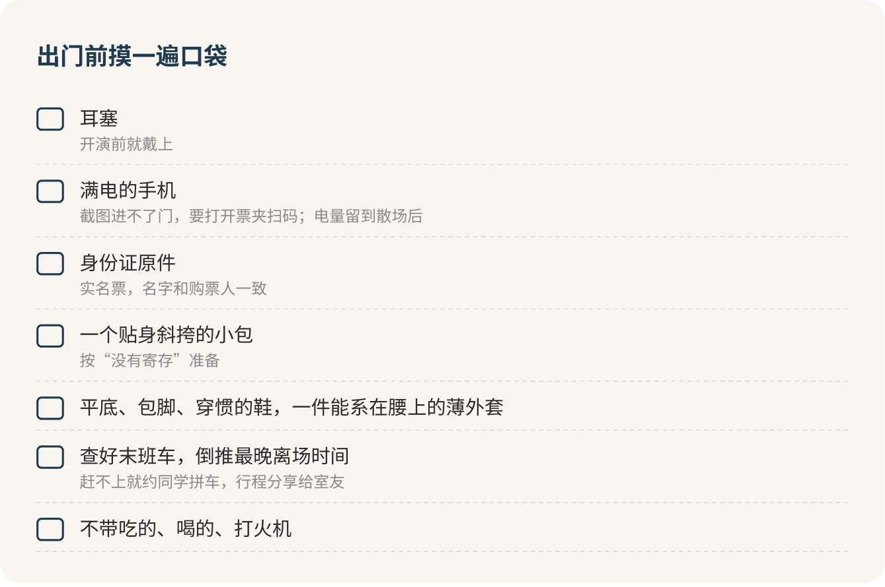

Livehouse：票买完，准备才开始
票买到手，最难的部分其实还没开始。去 Livehouse，一部满电的手机、一副耳塞、一趟查好时间的末班车，这三样比票重要。票价是这一晚最清楚的一笔钱，真正让第一次去的人吃亏的，是门口进不去、包没地方放、耳朵嗡嗡响，还有散场后站在路边打不到车。
第一次去，紧张很正常。你可能会担心：一个人去会不会很怪？不会跟着蹦是不是很尴尬？前面的人都在喊歌词，我一句都不会怎么办？放心，Livehouse 里没人看你。灯一暗，所有人的眼睛都在台上，你站着听、点点头、跟着晃两下，都是标准动作。
截图进不了门
先说手机，这是第一道坎。现在很多场次的购票须知里都有一句：打开票夹扫码入场，截图无效。你在地铁上随手截的那张二维码，到了门口不算数。手机得有电、有信号、App 能打开。
所以出门前手机要充满，排队的时候少刷视频。电量还要留到散场以后，叫车、扫码进站都靠它。能带个小充电宝最好，能不能带进去，以门口安检为准。
很多场是实名票，一张票对应一个证件，名字要和身份证一致，身份证原件必须带。实名票又多半不退不换，临时去不了，没法把截图发给室友让他替你去。所以下单前就把日期、下课时间、第二天早八都想清楚，比买完再找办法省事得多。
票：买最便宜那档就够
Livehouse 绝大多数是站票，没有座位，最低档和最高档站的是同一块地。贵出来的 VIP，买的通常是周边、签名和合影。只想听歌，最低档就够了，VIP 对第一次去的人来说不值；你本来就是这个乐队的铁粉、就想要那张合影，那另说。
学生票、双人票这类划算的票种，下单前看清楚说明。学生票进门要不要查学生证，写在票种说明里，找不到就带上学生证，免得到门口补差价。两个人一起去，双人票往往比两张单票便宜一点，人均一百上下就能听一场。
先假设没有地方存包
这是第一次去的人最容易踩的坑。不少 Livehouse 根本没有寄存处，须知里直接写“请自行保管物品”。就算页面上什么都没写，我也按“没有寄存”来准备。
站两个小时的 Livehouse，跟早高峰坐地铁从起点站到终点站差不多：站着，挤着，脚可能被踩，手里最好什么都别拿。所以：
只背一个能贴身斜挎的小包，装手机、身份证、钥匙、纸巾、耳塞。外套选薄的，热了能系在腰上。冬天别穿厚羽绒服去，在人群里站两个小时会热得难受，脱下来又没处放。电脑和大书包，千万别背去。
鞋穿平底、包脚、已经穿惯的。新鞋和露趾凉鞋别穿，前者磨脚，后者容易被踩。长头发扎起来，会凉快很多；长项链、大耳环、宽檐帽在人群里容易勾住，或者挡住后面的人。
食品、饮料、打火机，门口都会拦下来，拦下来就只能扔掉。口渴了在吧台买水，这笔钱提前算进预算。

什么时候到，站在哪
一般是开演前一小时开始排队入场。早到能站到想站的位置，代价是在门外多站一会儿。第一次去，我会在开演前半小时左右到，队伍已经动起来了，也不用在门口吹太久风。
进门的时候，问工作人员一句：
您好，里面能存包吗？出去以后还能再进来吗？
后半句很重要。有的场子会给出去的人做个标记放行，有的出去就不能再进。答案是“不能”，就在进去之前把洗手间、喝水这些事都办完。
进去以后站哪里，我的答案是：中后部，靠边，看得到出口。越往前越挤，离音响越近声音越大，第一次去别往前冲。站在靠墙或者靠吧台的地方，累了能靠一下，不舒服了三两步就能出去。
进门后先记住两个位置：出口和洗手间。这件事花不了十秒，但真有状况的时候，它能帮大忙。
耳塞：必带，开演前就戴上
这一条我说得最硬：耳塞必带。现场有多响，没有哪家会写在页面上，但世界卫生组织给场所定过一个标准，平均音量上限 100 分贝，还要求场所给观众提供耳塞、设置能让耳朵休息的安静区。连标准都要求场子发耳塞，你自己带一副，一点都不多余。
响的声音会让人暂时听力下降、耳鸣，反复这样就可能落下永久的毛病。年轻人保护耳朵最简单的办法，就是在吵的地方戴耳塞。
怕戴了耳塞听不清歌？专门听音乐用的耳塞是把声音整体压低，歌还是那首歌，只是不再刺耳朵；便宜的海绵耳塞也比什么都不戴强。关键是开演前就戴上，别等耳朵疼了才想起来。散场以后如果耳朵嗡嗡响，那是在提醒你：下次站远一点，耳塞戴早一点。
两首歌之间觉得太吵，就走到门口或走廊，让耳朵歇几分钟再回去。没人会觉得你不够投入。
人群往前涌的时候
前排有人跳水、推挤，或者人群突然往前涌，记住三件事：双手护在胸前，脚下站稳，别弯腰去捡东西。手机掉了，等人群松开再找，或者请工作人员帮忙。你接受不了前面的氛围，往后退几步就安全很多。
身体不舒服，找穿工作服的人：
我有点不舒服，能找个地方坐一下吗？
一个人去，反而最自在
在我看来，Livehouse 是最适合一个人去的现场。没有座位，不用跟谁挨着坐两小时，想往前就往前，想退后就退后，想走就走。很多人站在你旁边，也都是一个人来的。
一个人去，多做两件事就好：进门先认出口；把手机电量留到散场后，把行程分享给室友。
末班车，买票时就要查
演出一般晚上八点开始，演一个多小时到两小时。返场、签售还会往后拖。从散场到走出场地、找到车，再加半小时。
我的建议是：买票的时候就把回程定下来。在地图上查好最近地铁站的末班车，倒推出最晚几点必须离场。离学校远、末班车赶不上，就提前约好同学一起打车分摊，或者干脆选周末早一点的场次。
想提前走，就直接走。站票没有座位要让，没人拦你。太吵、太挤、头晕，转身往出口走就行。票钱拿不回来，但这笔钱已经花了，留下来硬撑也挣不回来。走到门口吹吹风，看一眼末班车还剩几分钟，然后回学校。